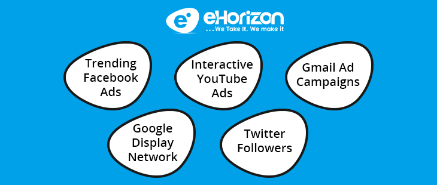
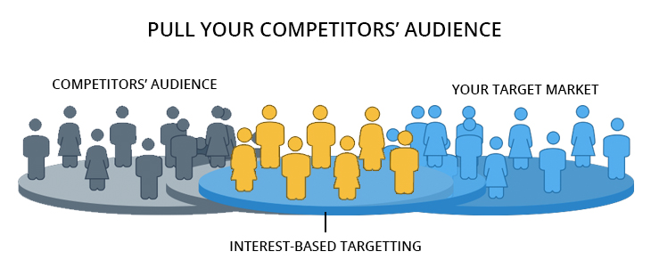
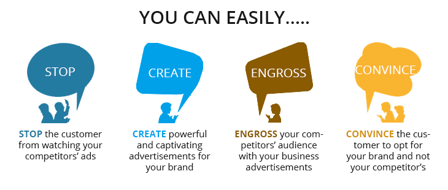
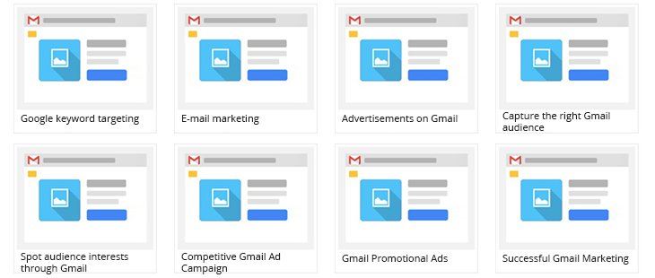

<?xml version="1.0" encoding="UTF-8"?><rss version="2.0"
	xmlns:content="http://purl.org/rss/1.0/modules/content/"
	xmlns:wfw="http://wellformedweb.org/CommentAPI/"
	xmlns:dc="http://purl.org/dc/elements/1.1/"
	xmlns:atom="http://www.w3.org/2005/Atom"
	xmlns:sy="http://purl.org/rss/1.0/modules/syndication/"
	xmlns:slash="http://purl.org/rss/1.0/modules/slash/"
	>

<channel>
	<title>Social Media Optimization &#8211; Blog</title>
	<atom:link href="https://www.ehorizon.ae/blog/category/social-media-optimization/feed/" rel="self" type="application/rss+xml" />
	<link>https://www.ehorizon.ae/blog</link>
	<description></description>
	<lastBuildDate>Thu, 01 Mar 2018 05:29:32 +0000</lastBuildDate>
	<language>en-US</language>
	<sy:updatePeriod>hourly</sy:updatePeriod>
	<sy:updateFrequency>1</sy:updateFrequency>
	<generator>https://wordpress.org/?v=4.4.15</generator>
	<item>
		<title>5 Aggressive Advertising Methods to Surpass Your Competitors</title>
		<link>https://www.ehorizon.ae/blog/2016/08/11/5-aggressive-advertising-methods-to-surpass-your-competitors/</link>
		<comments>https://www.ehorizon.ae/blog/2016/08/11/5-aggressive-advertising-methods-to-surpass-your-competitors/#respond</comments>
		<pubDate>Thu, 11 Aug 2016 11:17:37 +0000</pubDate>
		<dc:creator><![CDATA[eHorizon]]></dc:creator>
				<category><![CDATA[Search Engine Optimization]]></category>
		<category><![CDATA[Social Media Optimization]]></category>
		<category><![CDATA[Aggressive Advertising Methods]]></category>

		<guid isPermaLink="false">https://www.ehorizon.ae/blog/?p=106</guid>
		<description><![CDATA[<p>Rigorous advertising is all about trying your best to survive in the competitive industry. And competitive brilliance is all that is required to set the ball rolling for your business. If you want to steal a march on your rivals, you don’t really have to get dirty with the game. However, a slightly unhealthy competition [&#8230;]</p>
<p>The post <a rel="nofollow" href="../../../2016/08/11/5-aggressive-advertising-methods-to-surpass-your-competitors/index.html">5 Aggressive Advertising Methods to Surpass Your Competitors</a> appeared first on <a rel="nofollow" href="../../../index.html">Blog</a>.</p>
]]></description>
				<content:encoded><![CDATA[<p>Rigorous advertising is all about trying your best to survive in the competitive industry. And competitive brilliance is all that is required to set the ball rolling for your business.</p>
<p>If you want to steal a march on your rivals, you don’t really have to get dirty with the game. However, a slightly unhealthy competition never hurts anyone. Businesses do not believe in keeping things healthy anymore and are adopting some extremely competitive <a href="../../../../digital-marketing.html">advertising strategies to stay ahead</a> in the market.</p>
<p></p>
<p>To beat your competitors, all you have to do is put in extra efforts that you already do with your advertising and marketing promotions, yet, with a difference. Advertising has greatly helped small and large businesses pull off their strategies with panache and with extreme competitiveness. Your business can just be one of them with these helpful advertising strategies that can help you show thumbs down to your rivals’ efforts in the market.</p>
<p>&nbsp;</p>
<ol>
<li><strong>Target Your Competitors’ Audience on Facebook</strong></li>
</ol>
<p></p>
<p>Facebook has made competitive advertising take an interesting turn with interest-based targeting. Facebook users join pages and groups based on their interest in various businesses, industries, brands and products. You can effectively target these users purely based on their interest, especially if their interest lies in any of your competitors’ products and activities.</p>
<p>Through interest-based targeting, you can reach out to your competitors’ market using impactful advertisements and information. Your ads, of course, need to be better and more powerful as compared to your rival business. With keyword research, you can specifically target the audience you need to pull from your competitors and convert them as customers for YOUR business.</p>
<p>&nbsp;</p>
<ol start="2">
<li><strong>Distract Customers from Watching Your Competitors’ Ads</strong></li>
</ol>
<p></p>
<p>It is presumed that you already have the knowledge of keyword targeting through comprehensive and precise research. With the help of this, you need to target the growing multimedia channel of Ad Videos. Whenever you find a customer looking up for your competitors’ videos, you can disrupt your rivals’ ads by squeezing in a short video of your brand right at the beginning.</p>
<p>The point here is to introduce the customer to your brand first before they continue watching the videos they had actually come for. Interrupting your competitor’s ads can give you a great opportunity to showcase users of how your brand or business is better than most others in the market. And if you can come up with an ad that is extremely impressive and impactful, you might actually convince the customer to not watch your competitor’s ad at all.</p>
<p>The main aim is to stop users from watching or getting aware of your competitors’ brand. Before they do, you need to butt in with a watchable advertisement video that can make users believe that you are truly a better option to go with than the brand they had come looking for.</p>
<p>&nbsp;</p>
<ol start="3">
<li><strong>Introduce Gmail Ad Campaigns against Your Competitors</strong></li>
</ol>
<p></p>
<p>Now let’s introduce you to a sneaky tactic of advertising your brand. As you already know the vast usage and effective advantage of <a href="../../../../email-marketing-services.html">e-mail marketing</a>, you can reach out to your competitors’ users with precise keyword targeting using Gmail ads that pop up in the personal inbox of users.</p>
<p>Let’s say that your competition in the market is a big brand like Coca-Cola. There are millions and millions of users subscribed to the company’s emails, newsletters, press releases and other promotional materials. You carefully need to scoop out this audience with keyword-based targeting and a complete Gmail ads campaign for compelling users to check out your brand or website before they actually end up opening and reading your competitor’s email.</p>
<p>By targeting the brand name of Coca-Cola on Gmail, you can introduce impressive ads that are visible under the promotions tab of a user’s personal Gmail inbox. And this ad will be displayed to users when your competitor shoots users an email each time. This way, you at least have a chance to stop users from opening your competitors’ promotional emails by getting your brand to interfere with your rival’s marketing process.</p>
<p>&nbsp;</p>
<ol start="4">
<li><strong>Analyze and Target Your Competitors’ Homepages</strong></li>
</ol>
<p></p>
<p>Google has always made efforts to keep things interesting among rivaling businesses. One way you can beat your competitors is through Google Ad Display technology, which lets you find the most relevant and affinity audience for your business. To begin with the same, it is essential that you visit your competitors’ homepage to observe what type of visitors they have and the behavior of their target audience on the page.</p>
<p>Using the Google ad display technology, you can get a vivid picture of the type of audience your competitors’ are currently relying on, and that is exactly what you need to steal from them. Based on interests and demographics, you can actually customize your advertisement to grab the attention from the specific target audience of your competitors and get the ideal customers with your <a href="../../../../pay-per-click-management-services.html">display ads on Google</a>.</p>
<p>&nbsp;</p>
<ol start="5">
<li><strong>Take Advantage of the Potentiality of Twitter</strong></li>
</ol>
<p></p>
<p>For any form of advertisement, influence on <a href="../../../../social-media-marketing-services.html">social media</a> channels is a must. And one of the biggest social platforms today is Twitter. Twitter has proven to be a great information sharing platform, and it is through this channel that you can steal all the fun your competitors are having.</p>
<p>There are tools available that allow you to download a list of your competitors’ Twitter followers for better audience targeting. Once you have the list in your hand, you can use those Twitter handles to create impressive Twitter ads for your tailored audience. Because that is precisely the market you wish to hit, you need to come up with brilliant ads that can make users switch from the previous brand to yours without having a second thought.</p>
<p>You can easily add the tailored audience generated from the downloaded list of your competitor’s Twitter account and you can quickly get started with attracting your target audience and making them a part of your brand community.</p>
<p>Healthy competition is not always the best option in the cutthroat competition of today. You not only need to exist in the competition but you need to survive. And for the best survival, a little sneaky and competitive advertisement strategies can help your business steal the entire show from your rival industries in the market. Continue to show users how and why you are better than others in the crowd and no one can actually stop your brand from achieving great heights of success.</p>
<p>The post <a rel="nofollow" href="../../../2016/08/11/5-aggressive-advertising-methods-to-surpass-your-competitors/index.html">5 Aggressive Advertising Methods to Surpass Your Competitors</a> appeared first on <a rel="nofollow" href="../../../index.html">Blog</a>.</p>
]]></content:encoded>
			<wfw:commentRss>https://www.ehorizon.ae/blog/2016/08/11/5-aggressive-advertising-methods-to-surpass-your-competitors/feed/</wfw:commentRss>
		<slash:comments>0</slash:comments>
		</item>
		<item>
		<title>Social Media Trends To Rule the Year Of 2016</title>
		<link>https://www.ehorizon.ae/blog/2016/06/13/social-media-trends-to-rule-the-year-of-2016/</link>
		<comments>https://www.ehorizon.ae/blog/2016/06/13/social-media-trends-to-rule-the-year-of-2016/#comments</comments>
		<pubDate>Mon, 13 Jun 2016 10:55:55 +0000</pubDate>
		<dc:creator><![CDATA[eHorizon]]></dc:creator>
				<category><![CDATA[Social Media Optimization]]></category>
		<category><![CDATA[SMO]]></category>

		<guid isPermaLink="false">https://www.ehorizon.ae/blog/?p=72</guid>
		<description><![CDATA[<p>To keep up with the evolving social media trends, businesses have witnessed a host of changes in the previous years. And in the future, companies need to pull up their socks as social media is changing rapidly. Evasive social media marketing can lead to an adverse meltdown of your promotion strategies. ‘Adopt what others are [&#8230;]</p>
<p>The post <a rel="nofollow" href="../../../2016/06/13/social-media-trends-to-rule-the-year-of-2016/index.html">Social Media Trends To Rule the Year Of 2016</a> appeared first on <a rel="nofollow" href="../../../index.html">Blog</a>.</p>
]]></description>
				<content:encoded><![CDATA[<p style="text-align: justify;">To keep up with the evolving social media trends, businesses have witnessed a host of changes in the previous years. And in the future, companies need to pull up their socks as social media is changing rapidly. Evasive social media marketing can lead to an adverse meltdown of your promotion strategies. ‘Adopt what others are adopting’ – has become the key to surviving in the heavy competition.</p>
<p style="text-align: justify;"><strong><a href="../../../../social-media-marketing-services.html">Social media</a></strong> is a rather peculiar animal that makes businesses scramble each year to keep up with the dynamic trends that follow. Yet, very few actually manage to keep an eye out for the changing social media rules. The following media trends will help you cut through all that clutter and create a brand which is truly responsive to social media dynamics.</p>
<ol style="text-align: justify;">
<li><strong>Channelize Your Messages</strong></li>
</ol>
<p style="text-align: justify;">You have an empowering message, but which social media do you need to be on? Businesses have missed out on their entire social message tactic because of their communication strategies misfiring on social channels. No one wants to wind up with the right message on the wrong social channel. Following blinded craze without actually analyzing whether or not your target audience is live on that specific social media platform could lead to dubious message channeling.</p>
<p style="text-align: justify;">Having just a presence on social media platforms in not appealing, you need to target the bull’s-eye to ensure that your promotional messages hit the right market.</p>
<ol style="text-align: justify;" start="2">
<li><strong>Real-Time Engagement</strong></li>
</ol>
<p style="text-align: justify;">According to search engine watch, 73% people who share brand information expect a reply from the brand they are trying to reach out to. As a matter of fact, 53% expect or want a response in less than an hour. These statistics show how disturbing and disoriented the engagement levels are between the users and the business. This calls for faster response times by the brands for a receptive feedback process.</p>
<p style="text-align: justify;">When users share, they expect a reply and reception from the brand. Customers have the right to be attended to and your brand has a duty to fulfill. Social media is moving fast, and you need to surpass your competitor’s ability by responding to unsatisfied customers quickly.</p>
<ol style="text-align: justify;" start="3">
<li><strong>Engage users with a ‘Buy’ button</strong></li>
</ol>
<p style="text-align: justify;">Directly hinted at social commerce, research has found that social influences more customers’ buying preferences and decisions than retail websites. Creating an e-commerce platform is good, but probably not the best option in today’s competitive market. There has arisen a dire need to target users through social ads on platforms like <strong><a href="https://www.facebook.com/ehorizonweb/" target="_blank">Facebook</a></strong>, <strong><a href="https://twitter.com/eHorizonweb/" target="_blank">Twitter</a></strong>, <strong><a href="https://plus.google.com/u/0/101470589853770200011/about" target="_blank">Google+</a></strong>, <strong><a href="https://www.linkedin.com/company/ehorizon-electronic-solutions-est/" target="_blank">linkedin</a></strong> and major social links.</p>
<p style="text-align: justify;">Apart from short and effective advertisements, you can also opt for content strategies to provide buyers with more information on your products. Break-out from the traditional buying options and give customers a newer and creative purchasing experience.</p>
<p style="text-align: justify;"><span id="more-72"></span></p>
<p style="text-align: justify;"></p>
<ol style="text-align: justify;" start="4">
<li><strong>Live Video Streaming</strong></li>
</ol>
<p style="text-align: justify;">Thanks to apps like Periscope and Meerkat, video streaming has become a favorite option for businesses and has made streaming the next big thing in social media. Be more realistic about what you do, and live videos are a sure-shot way to do that. Make users believe that you are just not reading off a paper. Demonstrate what you really do by revealing a more original and unique side of your business.</p>
<p style="text-align: justify;">People tend to register visuals more than audio and content. What you show is what will define you as a brand in the market. More and more businesses today are going live with unedited videos, just to give customers a glimpse of their authenticity compared to their competitors. Your business needs to learn how to show, not tell.</p>
<ol style="text-align: justify;" start="5">
<li><strong>Living, breathing testimonials</strong></li>
</ol>
<p style="text-align: justify;">This might sound like a no-brainer activity, but the employees of your company have better ties and more engagement levels over social media platforms. Employee advocacy has become the new norm, showing that employees help the business stay more relevant socially. Keep your employees active on social networks because they have the ability to retain 10 times more followers than your company page.</p>
<p style="text-align: justify;">Making them sing praises for your business is never a bad idea for the current social media trends. The engagement level is higher with employees, so make them the epitome of your company vision and message and witness the difference.</p>
<ol style="text-align: justify;" start="6">
<li><strong>Mobiles first</strong></li>
</ol>
<p style="text-align: justify;">If your business has still not been able to make it to mobile devices, then market-wise, your business is in a gravely rough position. Making your way to users’ mobile has become a necessity more than a requirement. Be it for surfing or purchasing, mobile usability has succeeded in an enormous way, especially because who has the time? People want to make purchases on the go and users need information in the blink of an eye.</p>
<p style="text-align: justify;">Mobile devices and tablets need to be your focus point if you want to stay ahead in the competition. In addition to this, smart TV’s and smart watches are coming in a big way, but you need to stay on the mobile marketing train for a direct interaction and communication with potential customers.</p>
<p style="text-align: justify;">Irrespective of what the global scenario is currently, social media is here to stay. It has become one of the strongest and influential tools for a mass-target approach. Dig deeper into your marketing strategies and study the revolution being brought about by these latest social media trends. To be successful, set the ball rolling by keeping pace with the diversely changing social media trends.</p>
<p>The post <a rel="nofollow" href="../../../2016/06/13/social-media-trends-to-rule-the-year-of-2016/index.html">Social Media Trends To Rule the Year Of 2016</a> appeared first on <a rel="nofollow" href="../../../index.html">Blog</a>.</p>
]]></content:encoded>
			<wfw:commentRss>https://www.ehorizon.ae/blog/2016/06/13/social-media-trends-to-rule-the-year-of-2016/feed/</wfw:commentRss>
		<slash:comments>1</slash:comments>
		</item>
	</channel>
</rss>

<!-- Localized -->